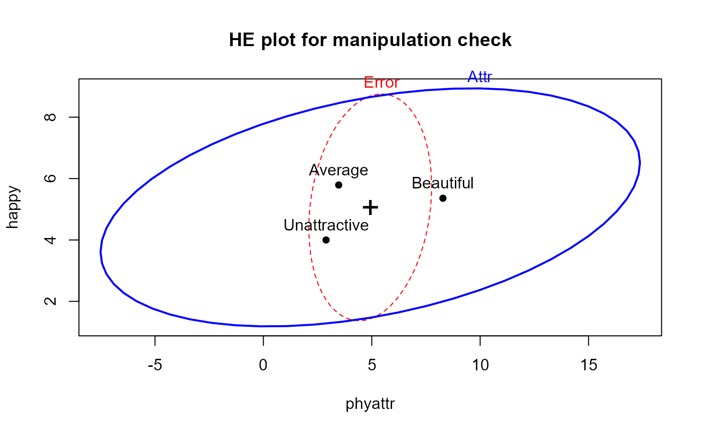

Effects Of Physical Attractiveness Upon Mock Jury Decisions
MockJury.RdMale participants were shown a picture of one of three young women. Pilot work had indicated that the one woman was beautiful, another of average physical attractiveness, and the third unattractive. Participants rated the woman they saw on each of twelve attributes. These measures were used to check on the manipulation by the photo.
Then the participants were told that the person in the photo had committed a Crime, and asked to rate the seriousness of the crime and recommend a prison sentence, in Years.
Does attractiveness of the "defendant" influence the sentence or perceived seriousness of the crime? Does attractiveness interact with the nature of the crime?
data(MockJury)Format
A data frame with 114 observations on the following 17 variables.
AttrAttractiveness of the photo, a factor with levels
BeautifulAverageUnattractiveCrimeType of crime, a factor with levels
Burglary(theft of items from victim's room)Swindle(conned a male victim)Yearslength of sentence given the defendant by the mock juror subject
Seriousa rating of how serious the subject thought the defendant's crime was
excitingrating of the photo for 'exciting'
calmrating of the photo for 'calm'
independentrating of the photo for 'independent'
sincererating of the photo for 'sincere'
warmrating of the photo for 'warm'
phyattrrating of the photo for 'physical attractiveness'
sociablerating of the photo for 'exciting'
kindrating of the photo for 'kind'
intelligentrating of the photo for 'intelligent'
strongrating of the photo for 'strong'
sophisticatedrating of the photo for 'sophisticated'
happyrating of the photo for 'happy'
ownPAself-rating of the subject for 'physical attractiveness'
Source
From Dr. Wuensch's StatData Page, http://core.ecu.edu/psyc/wuenschk/StatData/PLASTER.dat
References
Data from the thesis by Plaster, M. E. (1989). Inmates as mock jurors: The effects of physical attractiveness upon juridic decisions. M.A. thesis, Greenville, NC: East Carolina University.
Examples
# manipulation check: test ratings of the photos classified by Attractiveness
jury.mod1 <- lm( cbind(phyattr, happy, independent, sophisticated) ~ Attr, data=MockJury)
Anova(jury.mod1, test="Roy")
#>
#> Type II MANOVA Tests: Roy test statistic
#> Df test stat approx F num Df den Df Pr(>F)
#> Attr 2 1.7672 48.156 4 109 < 2.2e-16 ***
#> ---
#> Signif. codes: 0 '***' 0.001 '**' 0.01 '*' 0.05 '.' 0.1 ' ' 1
##
## Type II MANOVA Tests: Roy test statistic
## Df test stat approx F num Df den Df Pr(>F)
## Attr 2 1.7672 48.156 4 109 < 2.2e-16 ***
## ---
## Signif. codes: 0 '***' 0.001 '**' 0.01 '*' 0.05 '.' 0.1 ' ' 1
heplot(jury.mod1, main="HE plot for manipulation check")

pairs(jury.mod1)
 if (require(candisc)) {
jury.can <- candisc(jury.mod1)
jury.can
heplot(jury.can, main="Canonical HE plot")
}
#> Vector scale factor set to 8.817675
# influence of Attr of photo and nature of crime on Serious and Years
jury.mod2 <- lm( cbind(Serious, Years) ~ Attr * Crime, data=MockJury)
Anova(jury.mod2, test="Roy")
#>
#> Type II MANOVA Tests: Roy test statistic
#> Df test stat approx F num Df den Df Pr(>F)
#> Attr 2 0.075607 4.0828 2 108 0.01953 *
#> Crime 1 0.004697 0.2513 2 107 0.77824
#> Attr:Crime 2 0.050104 2.7056 2 108 0.07136 .
#> ---
#> Signif. codes: 0 '***' 0.001 '**' 0.01 '*' 0.05 '.' 0.1 ' ' 1
heplot(jury.mod2)
if (require(candisc)) {
jury.can <- candisc(jury.mod1)
jury.can
heplot(jury.can, main="Canonical HE plot")
}
#> Vector scale factor set to 8.817675
# influence of Attr of photo and nature of crime on Serious and Years
jury.mod2 <- lm( cbind(Serious, Years) ~ Attr * Crime, data=MockJury)
Anova(jury.mod2, test="Roy")
#>
#> Type II MANOVA Tests: Roy test statistic
#> Df test stat approx F num Df den Df Pr(>F)
#> Attr 2 0.075607 4.0828 2 108 0.01953 *
#> Crime 1 0.004697 0.2513 2 107 0.77824
#> Attr:Crime 2 0.050104 2.7056 2 108 0.07136 .
#> ---
#> Signif. codes: 0 '***' 0.001 '**' 0.01 '*' 0.05 '.' 0.1 ' ' 1
heplot(jury.mod2)
 # stepdown test (ANCOVA), controlling for Serious
jury.mod3 <- lm( Years ~ Serious + Attr * Crime, data=MockJury)
Anova(jury.mod3)
#> Anova Table (Type II tests)
#>
#> Response: Years
#> Sum Sq Df F value Pr(>F)
#> Serious 379.49 1 41.1423 3.938e-09 ***
#> Attr 74.22 2 4.0230 0.02067 *
#> Crime 3.92 1 0.4255 0.51563
#> Attr:Crime 49.30 2 2.6723 0.07370 .
#> Residuals 986.95 107
#> ---
#> Signif. codes: 0 '***' 0.001 '**' 0.01 '*' 0.05 '.' 0.1 ' ' 1
# need to consider heterogeneous slopes?
jury.mod4 <- lm( Years ~ Serious * Attr * Crime, data=MockJury)
anova(jury.mod3, jury.mod4)
#> Analysis of Variance Table
#>
#> Model 1: Years ~ Serious + Attr * Crime
#> Model 2: Years ~ Serious * Attr * Crime
#> Res.Df RSS Df Sum of Sq F Pr(>F)
#> 1 107 986.95
#> 2 102 901.38 5 85.565 1.9365 0.09468 .
#> ---
#> Signif. codes: 0 '***' 0.001 '**' 0.01 '*' 0.05 '.' 0.1 ' ' 1
# stepdown test (ANCOVA), controlling for Serious
jury.mod3 <- lm( Years ~ Serious + Attr * Crime, data=MockJury)
Anova(jury.mod3)
#> Anova Table (Type II tests)
#>
#> Response: Years
#> Sum Sq Df F value Pr(>F)
#> Serious 379.49 1 41.1423 3.938e-09 ***
#> Attr 74.22 2 4.0230 0.02067 *
#> Crime 3.92 1 0.4255 0.51563
#> Attr:Crime 49.30 2 2.6723 0.07370 .
#> Residuals 986.95 107
#> ---
#> Signif. codes: 0 '***' 0.001 '**' 0.01 '*' 0.05 '.' 0.1 ' ' 1
# need to consider heterogeneous slopes?
jury.mod4 <- lm( Years ~ Serious * Attr * Crime, data=MockJury)
anova(jury.mod3, jury.mod4)
#> Analysis of Variance Table
#>
#> Model 1: Years ~ Serious + Attr * Crime
#> Model 2: Years ~ Serious * Attr * Crime
#> Res.Df RSS Df Sum of Sq F Pr(>F)
#> 1 107 986.95
#> 2 102 901.38 5 85.565 1.9365 0.09468 .
#> ---
#> Signif. codes: 0 '***' 0.001 '**' 0.01 '*' 0.05 '.' 0.1 ' ' 1